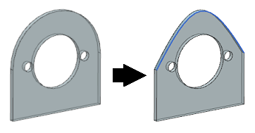

Estimated time to complete: 4–6 minutes
In this activity, you will create a conic curve and use it to trim a solid body with a Swept feature.

Open the Trim a body with a 3 Points, 2 Slopes conic curve activity.